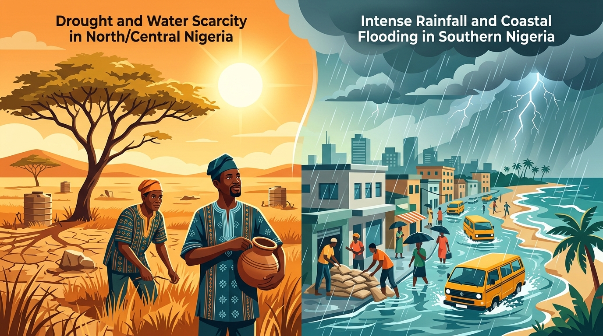

El Niño is not just distant ocean science—it directly disrupts Nigerian agriculture, triggers blistering heatwaves in the North, and brings erratic flash floods to coastal cities. Here is everything every citizen, farmer, and family must know to stay safe.

Demystifying the global climate phenomenon that alters rainfall, heat patterns, and wind currents thousands of miles away from the Pacific directly into Nigeria.
El Niño is the warm phase of the El Niño-Southern Oscillation (ENSO). It occurs every 2 to 7 years when trade winds weaken across the equatorial Pacific Ocean, allowing massive pools of warm surface water to shift eastward toward South America.
The colossal heat released from the ocean into the atmosphere destabilizes high-altitude jet streams. This alters the movement of rain-bearing clouds worldwide, shifting storm corridors and drying up traditional monsoon rains in West and East Africa.
In Nigeria, El Niño weakens the south-westerly moisture-laden monsoon winds from the Atlantic. This causes late rain onset, prolonged dry spells (droughts) in the North, while sporadic convective storms trigger lethal flash floods in Southern coastal metros.
Nigeria's vast landscape means El Niño strikes different agro-ecological zones with contrasting hazards. Select your region below to inspect specific climate threats and local survival tactics.
Key States Included:
During El Niño, Northern Nigeria faces severe reduction in annual rainfall, prolonged dry spells, heatwaves reaching 43°C, and accelerated desert encroachment.
Millet, Sorghum, and Cowpea yields plunge. Drying pastures trigger severe livestock dehydration and farmer-herder strain.
Shallow wells and seasonal dams dry up prematurely, causing widespread rural and peri-urban water distress.
Dry, dusty, superheated air significantly elevates Cerebrospinal Meningitis (CSM) outbreaks.
Harmattan dust blends with intense heat, triggering sudden grassfires and respiratory ailments.
El Niño is not an abstract ecological issue—it directly influences food market prices, domestic electricity supply, disease epidemics, and water taps across all social strata.
Delayed rains scorch young maize, yam sets, and sorghum seeds. Reduced agricultural output in Benue, Niger, and Kano leads to steep price hikes in major markets like Mile 12, Bodija, and Dawanau.
Intense heat induces heat strokes, cardiovascular fatigue, and spikes in Cerebrospinal Meningitis (CSM). In the South, sudden flood contamination of shallow boreholes drives devastating Cholera outbreaks.
Low tributary rainfall lowers water reservoirs at Kainji, Jebba, and Shiroro hydroelectric dams. Reduced megawatt generation leads to widespread load-shedding and prolonged national grid blackouts.
Prolonged dry heat causes aquifers to drop dramatically. Commercial water tankers raise prices, public taps run dry, and vulnerable communities are forced to consume untreated river water.
Answer 3 quick questions about your geographic location, occupation, and water access to determine your immediate risk level and get a tailored survival strategy.
From harvesting clean rainwater and securing drought-resilient cassava stems to knowing the emergency hotlines of your State Emergency Management Agency (SEMA), explore our specialized guides.